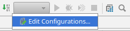
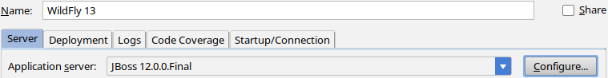
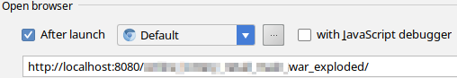
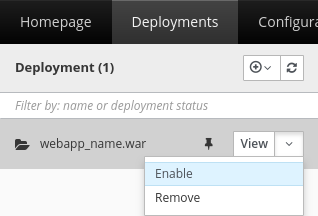

Preface
以后可能会在生产环境把 war 部署到 WildFly 里，于是写一篇 blog 记录一下部署方法。
WildFly 开发环境搭建
- 到 这里 下载 “Java EE<版本> Full & Web Distribution” 而不是 “Servlet-Only Distribution”，完整版会带有一个网页版管理界面。
- 解压缩
- 编辑 IDEA 的 “Run/Debug Configurations”
 - “Add New Configuration (Alt+Insert)” -> “JBoss Server” -> “Local”
- 点击图中的 “Configure”
 - “Add application server (Alt+Insert)”
- 填入刚解压的 WildFly 的路径，然后 “OK”
- 然后点击 OK 就可以做开发和调试了
去掉浏览器 URL 里自带的 context path
IDEA 默认情况下会部署到有 http://localhost:8080/<context_path> 的路径里，就像这样:

去掉它的办法也很简单。
- 首先先把图中的 context path 删掉
- 然后到
webapp/WEB-INF/下创建文件jboss-web.xml，文件内容如下1
2
3
4
5
6
7
8
9<?xml version="1.0" encoding="UTF-8"?>
<jboss-web xmlns="http://www.jboss.com/xml/ns/javaee"
xmlns:xsi="http://www.w3.org/2001/XMLSchema-instance"
xsi:schemaLocation="
http://www.jboss.com/xml/ns/javaee
http://www.jboss.org/j2ee/schema/jboss-web_5_1.xsd">
<!-- context-root 填写你想要的 context path -->
<context-root>/</context-root>
</jboss-web>
Done.
在服务器上部署
- 进入
WILDFLY_目录/bin - 运行
add-user.sh跟着向导来添加一个管理员用户 - 打开两个终端窗口分别运行
standalone.sh和jboss-cli.sh - 在
jboss-cli里输入connect即可连接到本地运行的 WildFly CLI 控制台- 如果控制台不是默认的
localhost:9990，那就用connect <地址>:<端口号>来连接
- 如果控制台不是默认的
在 jboss-cli 里运行命令来部署一个 web app
1
deploy <webapp_path> --name=<webapp_name>.war --runtime-name=<webapp_runtime_name>.war --unmanaged --disabled
参数说明:
webapp_path: web app 的路径webapp_name: web app 的实际名称，在整个 WildFly 环境中应该是唯一的webapp_runtime_name: web app 的运行时名称，后需要用到这个名字
- 用浏览器打开
http://localhost:9990，用之前添加的管理员用户来登录 - 依次打开
Configuration -> Subsystems -> Web -> Server -> default-server -> View -> Hosts - 点击 “Add” 按钮，按下表填写
| 名称 | 含义 |
| :—————– | :—————————– |
| Name | 网站的域名 |
| Default Web Module | 上面填写的 webapp_runtime_name | - 然后回到
Deployments，然后启用刚刚部署的<webapp_name>
 - 配置一下域名指向这个服务器IP
现在就可以通过浏览器域名直接访问新部署的webapp了。